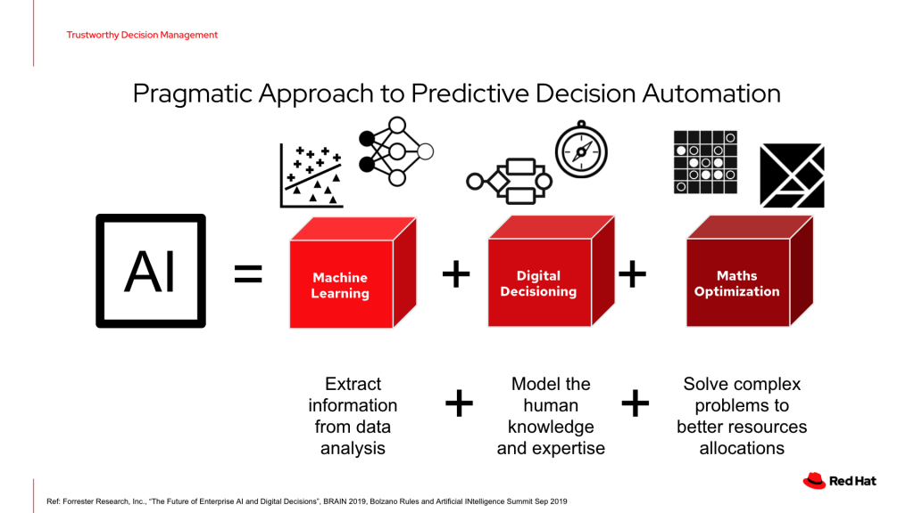
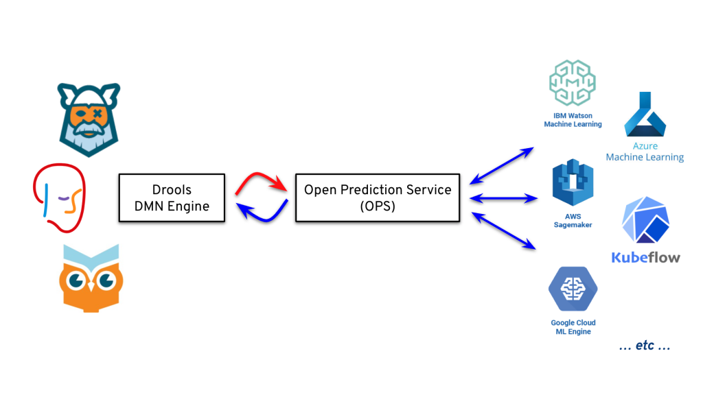
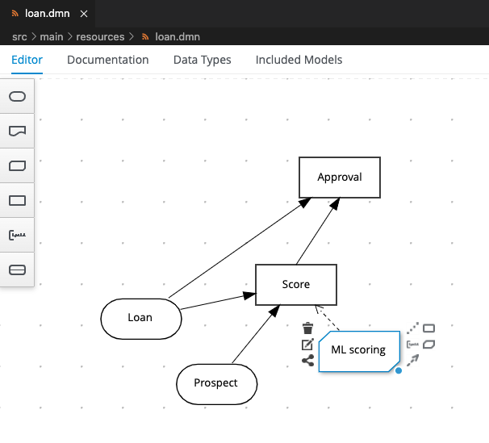
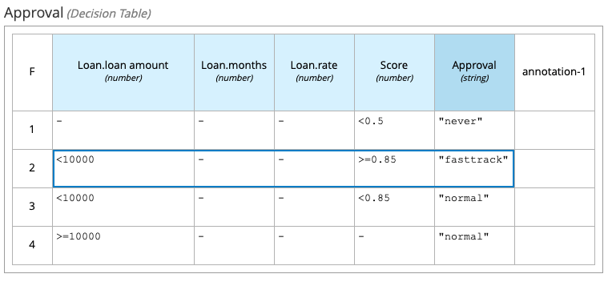
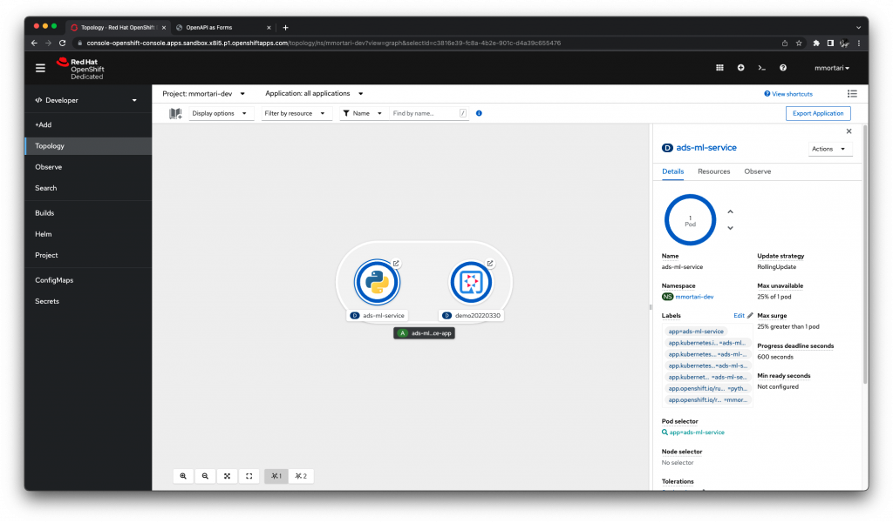
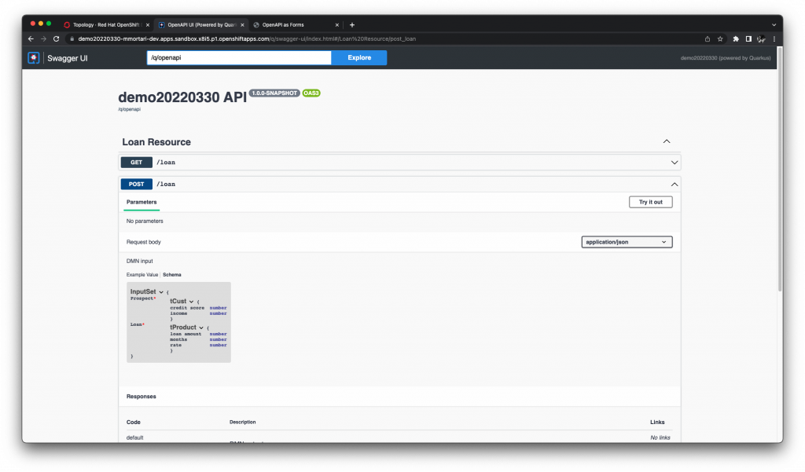
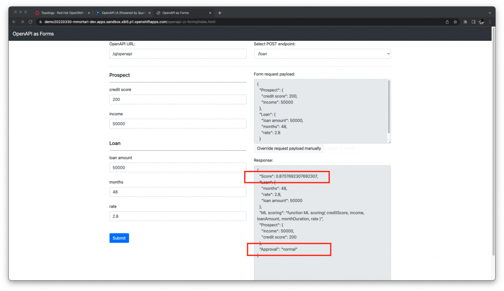
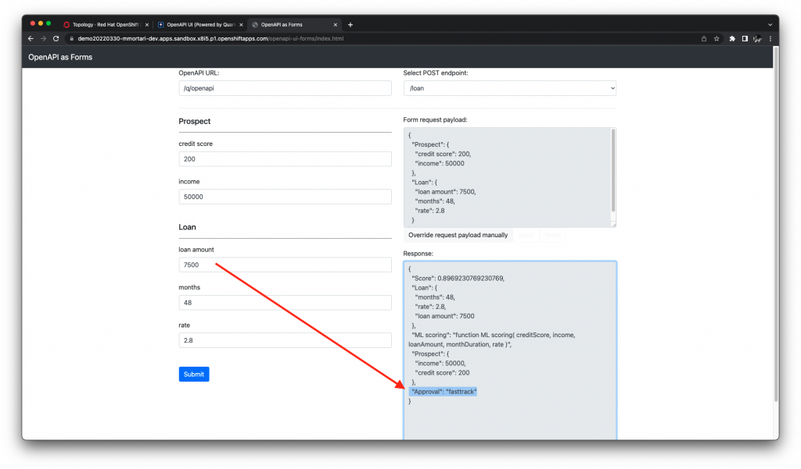

Integrating Drools DMN Engine with IBM Open Prediction Service
In this blog post we’re going to explore an integration between the Drools DMN Engine and another open source project from IBM: "Open Prediction Service" (OPS).
Introduction
Integrating symbolic AIs (rule engines, KRR, etc) with Machine Learning predictive models is an effective strategy to achieve pragmatical, and often more eXplainable, AI solutions.
We have also reiterated on this very powerful message across several conferences:

For the most recent examples, you can reference DecisionCamp or the Open Data Science Conference, or the All Things Open presentations.
This is the reason why we believe the integration between Predictive Models (such as ML or PMML-based solutions) and Decision Models is very, very important.
In this context, we will explore how to integrate the Drools DMN Engine with IBM’s Open Prediction Service hub, to achieve a pragmatic AI solution:

The Open Prediction Service offers us a broker mechanism between several backends for ML evaluation of Predictive Models.
Building the demo
In today’s demo, we will develop a simple loan "fast-track" approval service, based on both a Predictive Model to estimate the Risk Score, and a Decision Table in DMN to apply a business policy.
For the Risk Score prediction, you can reference this example on the IBM OPS repository.
Using the documentation, also available as Swagger / OpenAPI descriptor, we can identify the Predictive Model input features and output scoring.
Now we understand we will need to supply:
- the Credit score
- the Income
- the Loan Amount requested
- the number of instalments
- and the Rate
As output, we can reference the second predictor as a measure of Risk Score in our Decision Model.
We can integrate the ML predictive model inside our DMN model to implement the loan "fast-track" approval as usual by defining a BKM node:

Then, we can define a Decision Table implementing the business policy for the "fast-track" mechanism:

We have completed our modeling activities with DMN and the Predictive Model served via OPS.
Invoking the OPS service
On the more technical side, to actually integrate OPS evaluation we can follow two options.
The first solution could be to use the Quarkus’ RESTEasy client capabilities.
For this demo, it’s enough to define the interface of the service:
@Path("/predictions")
@RegisterRestClient
public interface OPSClient {
@POST
OPSResponse predictions(OPSRequest request);
}You can explore the complete code by referencing the repo of the demo at this commit.
Then, you just need to configure the actual URL for the OPS, for example:
# Connect to OPS Server
# on quarkus:dev, we use a local Docker run:
%dev.quarkus.http.port=0
%dev.org.acme.demo20220330.OPSClient/mp-rest/url=http://localhost:8080
# as default, we are using an app deployed on OpenShift:
org.acme.demo20220330.OPSClient/mp-rest/url=https://{your sandbox}.openshiftapps.comYou can reference to this Quarkus guide, for more details about implementing a REST client with Quarkus.
Invoking OPS using the Java client SDK
As a next step, we can replace the RESTEasy client, with the SDK offered by the OPS itself.
In this case, it will be enough to reference the dependency in the Maven pom.xml:
<dependency>
<groupId>com.ibm.decision</groupId>
<artifactId>ops-client-sdk</artifactId>
</dependency>Then, we can just replace the RESTEasy client with the OPS’ RunApi, for example:
RunApi api = new RunApi();
Prediction prediction = new Prediction();
// ...
prediction.setParameters(Arrays.asList(
param("creditScore", creditScore),
param("income", income),
param("loanAmount", loanAmount),
param("monthDuration", monthDuration),
param("rate", rate)
));
PredictionResponse result = api.prediction(prediction);You can explore the complete code by referencing the repo of the demo at this commit.
Running the demo
We will run the demo on the Red Hat Developer OpenShift Sandbox. Remember you can apply for a free account yourself. The free account has some limitations, but they will not block you in replicate this complete solution!

As you can see in the picture, first I have deployed the OPS demo on the sandbox (left).
Then, I’ve deployed the DMN demo explained in this post, as a Kogito-based application (right).
Then, we will have access to the Swagger OpenAPI code generated by the DMN extension of Kogito:

As you can see, the REST API is automatically generated for the InputData nodes as defined by the DMN model (Prospect and Loan).
Finally, to exercise the demo, we can make use of the automatically generated forms, based on the Swagger OpenAPI:

In this case, as we would expect, the total amount would not classify for the fast-track.
Then, we can exercise for a different amount value:

In this case, beyond the expected improvement in the Risk Score prediction from the ML model, we classify for a "fasttrack" as the policy in the Decision Table prescribes.
You can play with different values, showing how the Risk Score prediction is being affected and causing a different final decision.
Conclusions
In this post, we have explored integrating a Decision Model using DMN with a ML predictive model. Machine Learning and Decision Models together can provide a pragmatic, and eXplainable, AI solution.
Specifically, we have explored integrating the Drools DMN Engine with IBM Open Prediction Service. The advantage of this integration comes from the capability of OPS to interact with several ML providers!
Finally, we have deployed the complete demo on the OpenShift Sandbox.
What do you think of this integration demo?
Questions?
Let us know in the comments below!